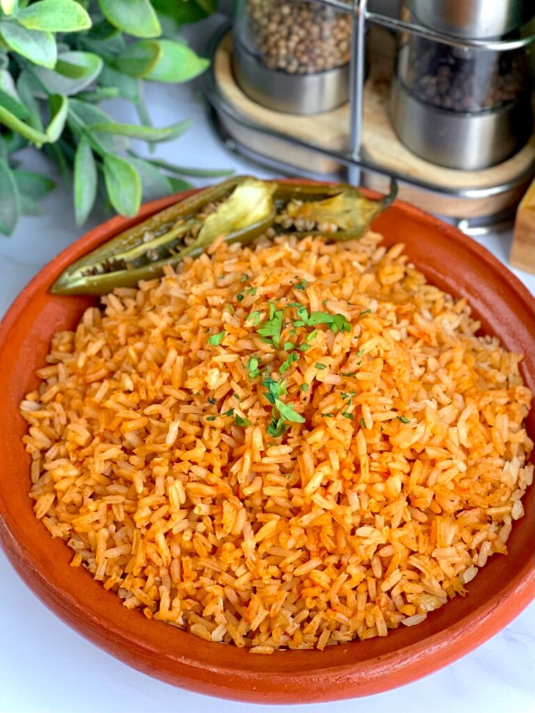

Mexican Rice

Description
This will be a paragrah talking about the rice
This will be a paragraph talking about where the recipe comes
from and changes I've made
Ingredients
- 1 cups of Long Grain Rice
- 1/2 cups of Chicken Stock
- 1 Roma Tomatoes
- 1/4 of an White Onion diced
- 1 Tablespoon of Tomato Paste
- 1 Garlic Clove crushed
- 1/2 tablespoons of Ground Annatto
- 1/4 teaspoon of Ground Tumeric
- 1/8 teaspoon of Ground Cumin
- 1 Jalapeno or Serrano Pepper
- Salt to taste
- Olive Oil for cooking
- Fresh Cilantro
Steps
- In a blender add the roma tomato, onion, tomato paste, garlic and your spices
- Cover and blend well
- Cut the pepper you picked in half stopping at the stem so the pepper stays together
- Rinse your rice and drain
- Add oil to your skillet and place on medium heat till the pan is hot
- Add rice to your heated pan and sautee till toasted. This takes between 5-6 minutes
- Turn down the heat to the lowest setting
- Add sauce into your skillet with the rice
- Add salt to taste
- Add the pepper
- Cover the pot and let cook till sauce has been absorbed completely (~20 minutes)
- Fold in the rice mixing evenly without breaking the grains
- Cover and rest off the heat for 10 minutes